Pomodorify help
What it is
Music sized to one work block. Pick a playlist that lasts about 25 minutes, press start, and work until it ends. Pomodorify can log the time to a task.
Start a playlist
- Pick a playlist and press START.
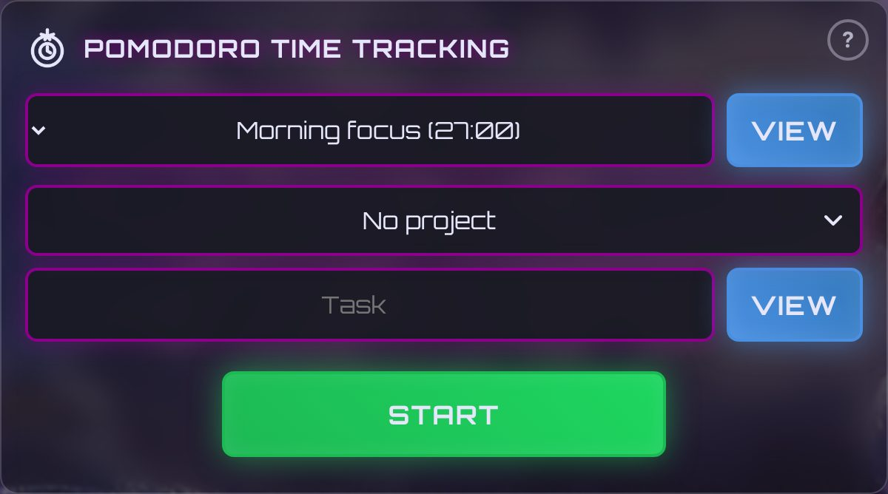
- The panel shows the track and time left. STOP ends early.
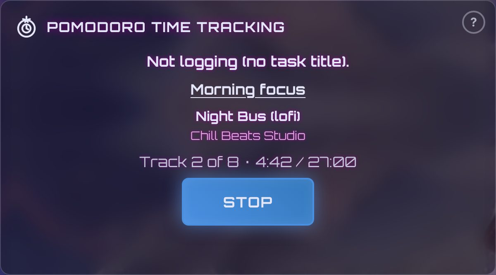
- Skip or pause at the bottom.
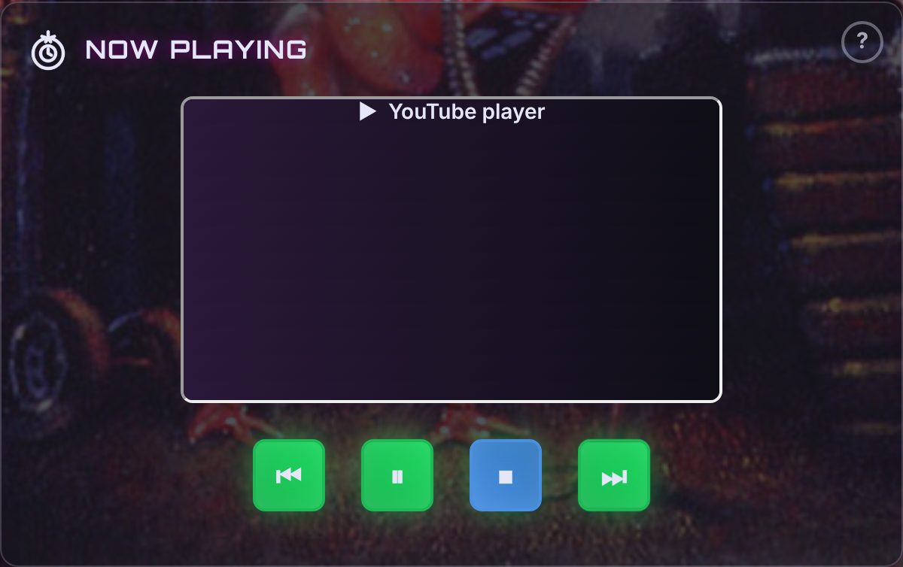
Log a task
- Type a task before START. No task, no logging.
- Optional: VIEW adds labels.
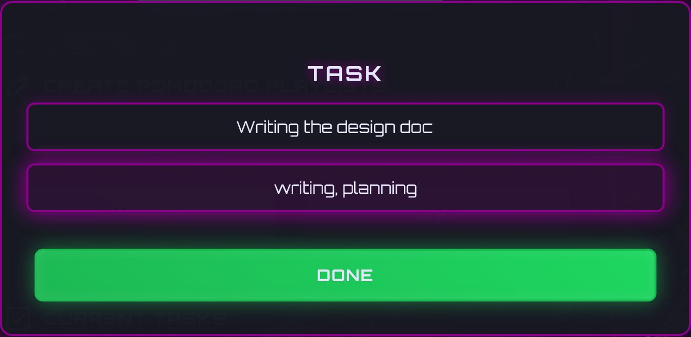
- Time played adds up under Current tasks.
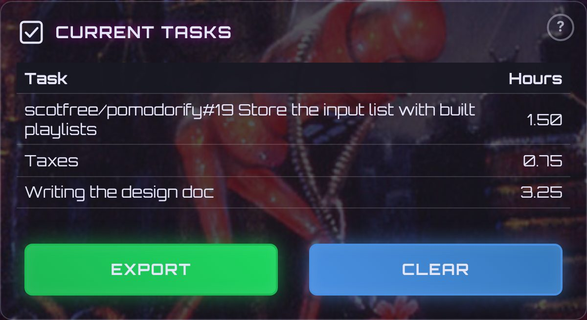
New playlist from a search- Set the minutes, then SEARCH.
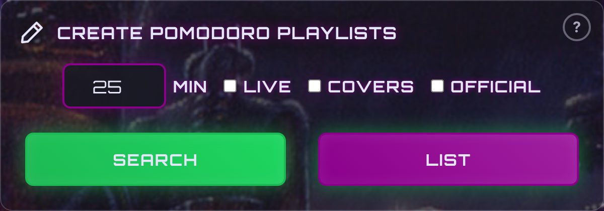
- Type a search and CREATE.
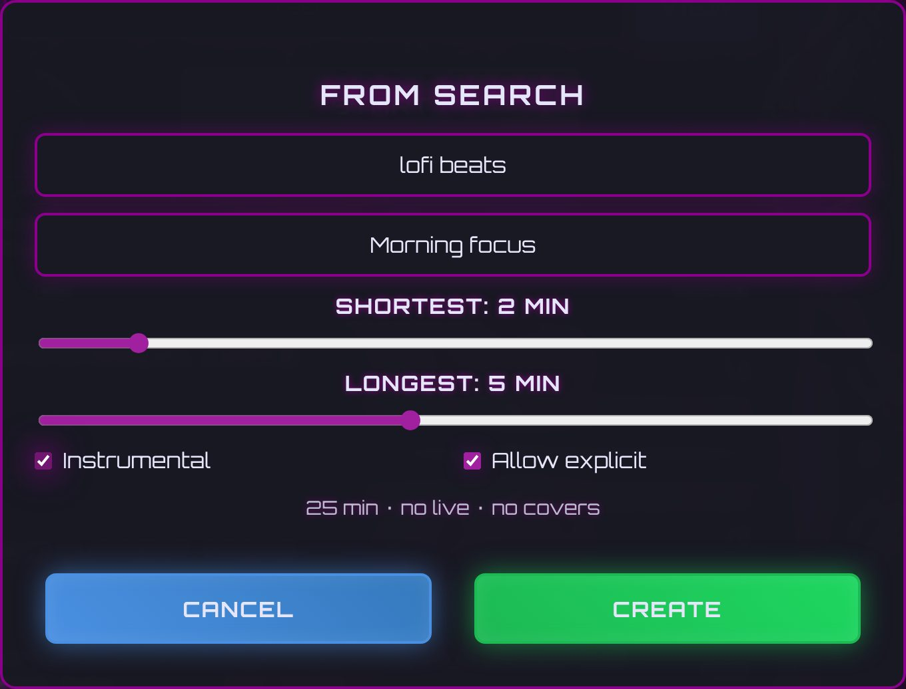
- Your playlist, saved and ready.
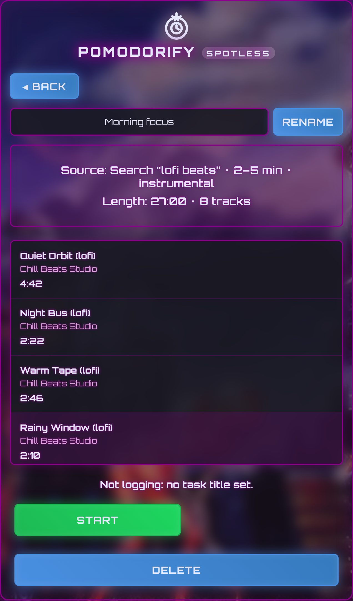
 Log in to Spotify
Log in to Spotify
- Track only. Press the button and allow access.
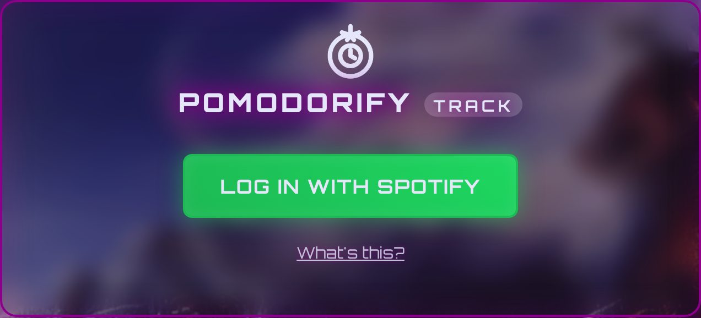
GitHub issue tracking
- Settings: paste a classic token (repo, project, read:org) and SAVE.
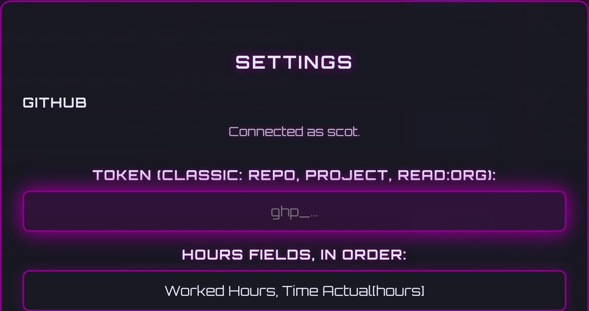
- Pick a project or repo, then type to find the issue.
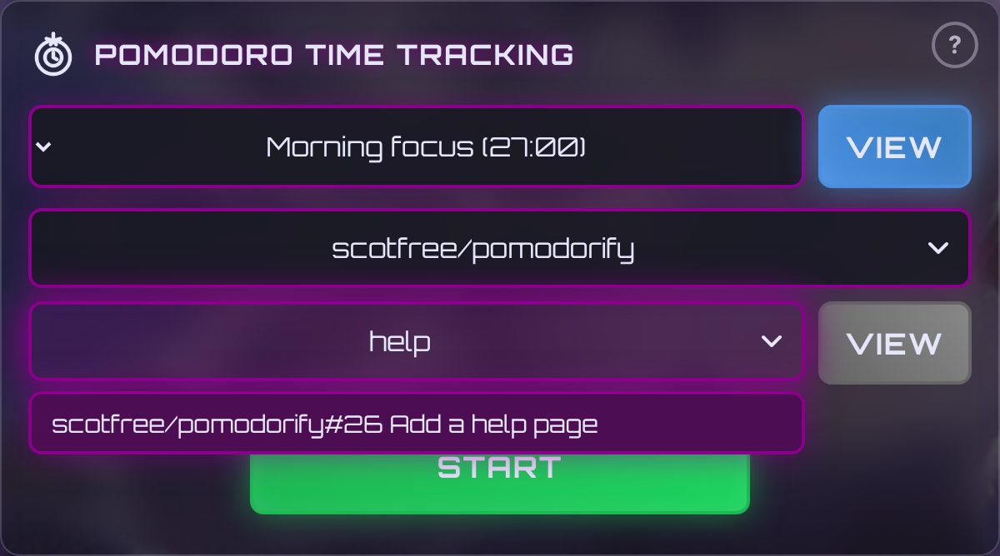
- START. Hours go to the issue.
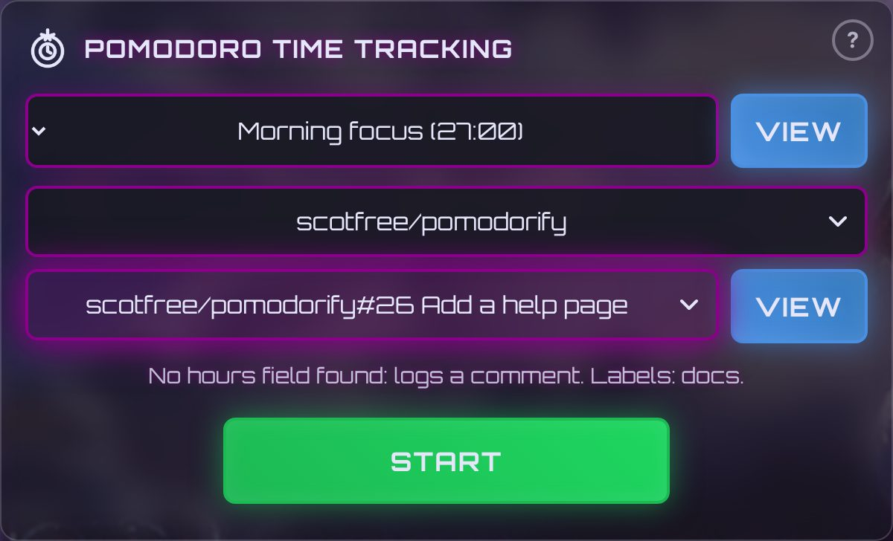